pacman::p_load(tidyverse, ggthemes, showtext, patchwork)
sysfonts::font_add_google("Noto Sans JP", "noto")
showtext::showtext_auto()
options(scipen = 999) # 指数表記（1e+06など）を無効にする2026年11月7日(金) プレゼミ
データの準備
今回は「経営者は『ぎりぎりの赤字』『ぎりぎりの減益』『ぎりぎりの業績予想未達』を嫌い、会計上の判断（利益調整）によって『ぎりぎりの黒字・増益・予想達成』に変えているのではないか」という問いを、Burgstahler and Dichev (1997) の利益分布アプローチ（earnings distribution approach）を使って日本企業のデータで検証します。 今回は回帰分析（lm()やglm()）を一切使わず、ヒストグラム（分布の形状）と1つの検定統計量（標準化差分）だけで経営者の行動を読み解きます。
moodle+Rの「プレゼミ」から、merged_forecast_both_financial.csvをダウンロードし、これまでと同様にpresemiフォルダの中のdataフォルダに保存してください。 このデータは、日経NEEDS FinancialQUESTから取得した上場企業の財務データと、決算短信で公表された経営者の業績予想データをあらかじめ結合したものです。
まずは、今回の分析で使用するパッケージを読み込み、グラフの日本語フォントと表示オプションを設定します。
それでは、read_csv()関数でデータを読み込み、列名の変更と決算年・決算月の変数作成を行います。
df <- read_csv(
"data/merged_forecast_both_financial.csv",
col_types = cols(日経会社コード = col_character()) # 先頭の0を残すために文字列型として読み込む
) |>
rename(
親会社利益 = "親会社株主に帰属する当期純利益（連結）／当期利益（単独）［累計］"
) |>
mutate(
決算年 = as.integer(str_sub(決算期, 1, 4)), # "2025/03" の1〜4文字目 → 2025
決算月 = as.integer(str_sub(決算期, 6, 7)) # "2025/03" の6〜7文字目 → 3
)なぜcol_types = cols(日経会社コード = col_character())を指定するのか？ 日経会社コードには"0000001"（極洋）のように先頭に0がついた7桁のコードが入っています。何も指定せずに読み込むと、Rが自動的に数値（整数1）に変換してしまい、先頭の0が消えてしまいます。企業コードや郵便番号、電話番号のように「計算に使わない数字のコード」は、必ず文字列型（col_character()）として読み込むのが鉄則です。
また、このコードでは以下の2つの便利な文字列・列名操作を行っています。
rename(新しい列名 = "元の列名")：日経NEEDSからダウンロードしたデータには、"親会社株主に帰属する当期純利益（連結）／当期利益（単独）［累計］"のように非常に長い列名がついていることがあります。rename()関数を使うと、分析しやすい短い名前（ここでは親会社利益）に付け替えることができます。str_sub(文字列, 開始位置, 終了位置)：stringrパッケージ（tidyverseに含まれる）の関数で、文字列の指定した位置を取り出します。たとえば"2025/03"という文字列の1〜4文字目を取り出すと"2025"、6〜7文字目を取り出すと"03"になります。それをas.integer()関数で整数型（<int>）に変換しています。
読み込んだデータの構造を確認してみます。
df |>
select(company, 日経会社コード, 決算期, 決算年, 決算月, 決算月数, 資産合計, 親会社利益, 純利益, 予想純利益, 法人税等負担率) |>
glimpse()Rows: 43,129
Columns: 11
$ company <chr> "極洋", "極洋", "極洋", "Ｖｅｒｉｔａｓ Ｉｎ Ｓｉｌｉ", "Ｖｅｒｉｔａｓ Ｉｎ Ｓｉｌｉ",…
$ 日経会社コード <chr> "0000001", "0000001", "0000001", "0033033", "0033033", …
$ 決算期 <chr> "2026/03", "2025/03", "2024/03", "2025/12", "2024/12", …
$ 決算年 <int> 2026, 2025, 2024, 2025, 2024, 2023, 2026, 2025, 2024, 2…
$ 決算月 <int> 3, 3, 3, 12, 12, 12, 3, 3, 3, 10, 10, 10, 3, 3, 3, 3, 3…
$ 決算月数 <dbl> 12, 12, 12, 12, 12, 12, 12, 12, 12, 12, 12, 12, 12, 12,…
$ 資産合計 <dbl> 214128, 182125, 160720, 1884, 2248, 1655, 2960, 1707, 1…
$ 親会社利益 <dbl> 6841, 6740, 5936, -425, -236, 33, 93, 58, 171, 91, 159,…
$ 純利益 <dbl> 6841, 6740, 5936, -425, -236, 33, 93, 58, 171, 91, 159,…
$ 予想純利益 <dbl> 8200, 7000, 6000, 168, 108, 31, 86, 207, 296, 154, 135,…
$ 法人税等負担率 <dbl> 34.9, 26.2, 34.1, NA, NA, 7.9, 34.8, 40.0, 36.6, 24.4, …このデータは1社1決算期 ＝ 1行（全43,129行、4048社）となっており、金額の単位はすべて百万円です。主な変数の意味は以下の通りです。
日経会社コード：企業を識別する7桁のコード決算期,決算年,決算月：決算の年月（例："2025/03"なら2025年3月期）決算月数：その決算期が何か月分か（通常の年次決算なら12）資産合計：期末の総資産（百万円）親会社利益：財務データの当期純利益の実績値（百万円）純利益,予想純利益：決算短信における当期純利益の実績値と、期初（前期の決算発表時）に経営者が公表した今期の予想値（百万円）法人税等負担率：税効果会計適用後の法人税等の負担率（単位：%）
第1部：期首総資産・前期利益の作成と3つの比率の計算
期首総資産と前期利益を安全に取得する（「連続」のチェック）
前回の授業で確認した通り、当期の利益や利益の変化を企業規模（総資産）で割って比率を作る際には、当期の利益がすでに含まれている「期末の総資産」ではなく、「期首の総資産（＝前期末の総資産）」で割る必要があります。 また、「前期から利益が増えたか減ったか（増益か減益か）」を計算するためには、「前期の当期純利益」が必要です。
そこで、会社ごとに決算期の順番に並べ替え、lag()関数を使って1つ前の行から前期末の総資産と前期の利益を取得します。
df <- df |>
arrange(日経会社コード, 決算期) |> # 会社ごとに、決算期の古い順から並べる
group_by(日経会社コード) |> # 会社ごとにグループ化する
mutate(
連続 = (決算年 - lag(決算年) == 1) & (決算月 == lag(決算月)), # 1つ前の行が「ちょうど1年前」か
期首資産 = if_else(連続, lag(資産合計), NA_real_), # 連続していれば前期末の総資産、そうでなければNA
前期利益 = if_else(連続, lag(親会社利益), NA_real_) # 連続していれば前期の純利益、そうでなければNA
) |>
ungroup()group_by()の新しい書き方（.by引数）： 講義で配布したRコード（presemi_06.R）のように、group_by()とungroup()で挟む代わりに、mutate()の中に直接.by = 日経会社コードと書くこともできます。
df <- df |>
arrange(日経会社コード, 決算期) |>
mutate(
.by = 日経会社コード,
連続 = ...
)この書き方だと最後にungroup()を書く必要がなく、グループ化解除のし忘れを防げるため、最近のdplyrではよく使われます。どちらの書き方でも結果はまったく同じです。
ここで単に期首資産 = lag(資産合計)とするのではなく、連続という条件を作ってチェックしている点が非常に重要です。
- もしある企業の途中の年（たとえば2019年）のデータが欠損していて、2018年の次の行が2020年になっていた場合、単なる
lag()を使うと「2年前の2018年の値」を「2020年の1年前（前期）」として誤って使ってしまいます。 - また、企業が決算月を変更した場合（たとえば3月決算から12月決算へ変更した場合）も、決算期間が9か月などの変則決算となり、通常の12か月決算とは比較できなくなります。
- そこで、
(決算年 - lag(決算年) == 1) & (決算月 == lag(決算月))によって「1つ前の行が、同じ決算月で、かつちょうど1年前であるか」を判定し、満たさない場合はNA_real_（実数型の欠損値）にするという安全装置を入れています。
3つのベンチマークに対応する比率を作る
続いて、通常の12か月決算（決算月数 == 12）で、期首総資産が正の値として存在し（期首資産 > 0）、データが十分にそろっている2016年〜2025年の10年間（between(決算年, 2016, 2025)）に絞り込んだうえで、3つの比率を作成します。
d <- df |>
filter(
決算月数 == 12,
期首資産 > 0,
between(決算年, 2016, 2025) # 2016以上2025以下の10年分を抽出
) |>
mutate(
利益率 = 親会社利益 / 期首資産, # ① 赤字回避：利益 ÷ 期首総資産
利益増減率 = (親会社利益 - 前期利益) / 期首資産, # ② 減益回避：利益の変化 ÷ 期首総資産
予想誤差率 = (純利益 - 予想純利益) / 期首資産 # ③ 予想未達回避：（実績 − 予想）÷ 期首総資産
)
nrow(d)[1] 33550between(x, a, b)は、x >= a & x <= b（xがa以上かつb以下）を簡潔に書くためのdplyrの関数です。年度や数値の範囲で絞り込むときにとても便利です。
作成した3つの変数は、いずれも「経営者が意識するベンチマーク（目標水準）がちょうど 0 になる」ように設計されています。
| 変数名 | 計算式 | 検証する仮説 | 0未満（左側）の意味 | 0以上（右側）の意味 |
|---|---|---|---|---|
① 利益率 |
\dfrac{\text{当期純利益}}{\text{期首総資産}} | 赤字回避 | 赤字（純損失） | 黒字（純利益） |
② 利益増減率 |
\dfrac{\text{当期純利益} - \text{前期純利益}}{\text{期首総資産}} | 減益回避 | 前期より減益 | 前期と同じか増益 |
③ 予想誤差率 |
\dfrac{\text{実績純利益} - \text{期初予想純利益}}{\text{期首総資産}} | 予想未達回避 | 経営者予想に未達 | 経営者予想を達成 |
検算：分析用データの記述統計量を確認する
分析に入る前に、絞り込み後のデータdが何行・何社になり、赤字・減益・予想未達の企業がそれぞれ何割くらいあるのかをsummarise()で確認します。
d |>
summarise(
行数 = n(),
会社数 = n_distinct(日経会社コード),
最初の年 = min(決算年),
最後の年 = max(決算年),
赤字の割合 = mean(利益率 < 0, na.rm = TRUE),
減益の割合 = mean(利益増減率 < 0, na.rm = TRUE),
予想未達の割合 = mean(予想誤差率 < 0, na.rm = TRUE)
)# A tibble: 1 × 7
行数 会社数 最初の年 最後の年 赤字の割合 減益の割合 予想未達の割合
<int> <int> <int> <int> <dbl> <dbl> <dbl>
1 33550 3853 2016 2025 0.133 0.401 0.407利益率 < 0という条件式は、赤字ならTRUE（内部的には1）、黒字ならFALSE（内部的には0）を返します。したがって、その平均mean(利益率 < 0, na.rm = TRUE)を計算すると、そのまま「赤字企業の割合」になります。na.rm = TRUEは欠損値（NA）を除いて平均を計算する指定です。
全体で33,550行（3,853社、2016〜2025年の10年間）のデータとなりました。 ここで注目すべきは、赤字の割合は約13.3%と少数派であるのに対し、減益の割合は約40.1%、予想未達の割合は約40.7%と4割前後を占めている点です。つまり、利益率の分布はもともとプラス側（黒字側）に山があり、利益増減率と予想誤差率の分布はゼロの近くに山があるという形状の違いがあります。
第2部：利益分布アプローチと2つの自作関数
Burgstahler and Dichev (1997) の考え方
会計基準の範囲内で、経営者が引当金の計上額や資産の評価、費用の計上タイミングなどの判断（裁量）を使って報告利益を動かすことを利益調整（earnings management / 利益マネジメント）と呼びます（会計基準に違反する違法な「粉飾決算」とは区別されます）。
会計上の判断で動かせる利益の額には限りがあるため、「大赤字を黒字に変える」ことはできませんが、「あと少しで黒字・増益・予想達成に届く（ベンチマークのすぐ左側にいる）」企業であれば、利益を少しだけ持ち上げてベンチマークのすぐ右側（0以上）に移ることができます。
もし多くの経営者がそのような行動をとっているなら、全企業の利益のヒストグラムを描いたときに、本来のなめらかな分布と比べて、
- ゼロの直前（わずかな赤字・減益・予想未達）の階級が異常に少なくなる（＝「谷」ができる）
- ゼロの直後（わずかな黒字・増益・予想達成）の階級が異常に多くなる（＝「山」ができる）
という不自然な「段差（ゆがみ）」が現れるはずです。この分布の段差から利益調整の状況証拠を探る手法が、Burgstahler and Dichev (1997) や Degeorge, Patel and Zeckhauser (1999)、日本企業を分析した首藤 (2010) などで用いられている利益分布アプローチです。
ヒストグラムを描く関数 hist_bd() を作る
3つの比率（利益率・利益増減率・予想誤差率）や各年度に対して同じ形式のヒストグラムを何度も描くため、Rで独自の関数hist_bd()を作成します。
# 階級幅 bw のヒストグラム。ゼロの直前（-bw 以上 0 未満）と直後（0 以上 bw 未満）に色をつける関数
hist_bd <- function(x, bw = 0.005, lim = 0.1, xlab = "") {
x <- x[!is.na(x) & abs(x) < lim] # 欠損値を除き、表示範囲（-lim 〜 +lim）のデータだけを取り出す
tibble(bin = floor(x / bw)) |> # 各データが何番目の階級（bin）に入るかを計算する
count(bin) |> # 階級ごとの企業・年度数（n）を数える
mutate(
mid = (bin + 0.5) * bw, # グラフの横軸用に、各階級の真ん中の値を計算する
区分 = case_when(
bin == 0 ~ "ゼロの直後", # 0 以上 bw 未満
bin == -1 ~ "ゼロの直前", # -bw 以上 0 未満
TRUE ~ "その他" # それ以外の階級
)
) |>
ggplot(aes(x = mid, y = n, fill = 区分)) +
geom_col(width = bw * 0.95) +
geom_vline(xintercept = 0, linetype = "dashed") +
scale_fill_manual(
values = c("ゼロの直後" = "#e3439e", "ゼロの直前" = "#879dde", "その他" = "grey75")
) +
labs(x = xlab, y = "企業・年度数", fill = NULL) +
theme_minimal(base_family = "noto")
}なぜ通常のgeom_histogram()を使わずにfloor(x / bw)で区切るのか？ ggplot2のgeom_histogram()をそのまま使うと、階級（棒）の区切り位置が自動調整されてしまい、ちょうど0が棒の境界線にならないことがあります。境界線が0からずれると、「わずかな赤字」と「わずかな黒字」が同じ1本の棒の中に混ざってしまい、ゼロ前後の段差が正しく観察できません。 floor(x / bw)（floor()は小数点以下を切り捨てる床関数）を使えば、
- 0 \le x < bw のとき：
floor(x / bw)は必ず0（ゼロの直後） - -bw \le x < 0 のとき：
floor(x / bw)は必ず-1（ゼロの直前）
となり、0を境界として1社の狂いもなく厳密に階級を分けることができます。
また、case_when()は複数の条件で場合分けを行う関数です。if_else()は2択（「もし〜ならA、そうでなければB」）のときに使いますが、3つ以上の区分（「bin == 0ならゼロの直後、bin == -1ならゼロの直前、それ以外（TRUE）ならその他」）に分けたいときはcase_when()を使うとすっきり書けます。
段差の大きさを測る「標準化差分」と関数 bd_test()
ヒストグラムを目で見るだけでなく、「ゼロの前後の段差が偶然のばらつきとは言えないほど大きいか」を統計的に検定するために、Burgstahler and Dichev (1997) が提案した標準化差分（standardized difference）を計算します。
全体のサンプルサイズを N、階級 i に入る企業数を n_i、全体に占める割合を p_i = n_i / N とします。もし分布がなめらかであれば、階級 i の企業数は両隣の階級の平均値 \frac{n_{i-1} + n_{i+1}}{2}（期待度数）とほぼ同じになるはずです。 そこで、「実際の度数 n_i」から「両隣の平均（期待度数）」を引いた差を、その差の標準偏差 SD_i で割ったものが標準化差分です。
\text{標準化差分}_i = \frac{n_i - \dfrac{n_{i-1}+n_{i+1}}{2}}{SD_i},\qquad SD_i = \sqrt{N p_i(1-p_i)+\frac{1}{4} N(p_{i-1}+p_{i+1})(1-p_{i-1}-p_{i+1})}
この標準化差分は、標本サイズが大きいとき標準正規分布に従うため、通常の検定の z 値（または t 値）と同じ基準で読むことができます。
- ゼロの直前（
bin = -1）の標準化差分が -1.96 より小さい：5%水準で有意に「谷（くぼみ）」がある（両隣の平均より不自然に少ない）。 - ゼロの直後（
bin = 0）の標準化差分が +1.96 より大きい：5%水準で有意に「山（突出）」がある（両隣の平均より不自然に多い）。
この計算を自動で行う関数bd_test()を定義します。
# ゼロの直前（bin = -1）と直後（bin = 0）の度数・期待度数・標準化差分を計算する関数
bd_test <- function(x, bw = 0.005, lim = 0.1) {
x <- x[!is.na(x) & abs(x) < lim]
# すべての階級番号の度数を数える（0件の階級も欠落しないようにfactorで範囲を指定）
n <- table(factor(floor(x / bw), levels = floor(-lim / bw):(floor(lim / bw) - 1)))
N <- sum(n)
p <- n / N
# 指定した階級 b の標準化差分を計算する内部関数
sdiff <- function(b) {
i <- as.character(b)
l <- as.character(b - 1) # 左隣の階級
r <- as.character(b + 1) # 右隣の階級
sd <- sqrt(N * p[i] * (1 - p[i]) + 0.25 * N * (p[l] + p[r]) * (1 - p[l] - p[r]))
unname((n[i] - (n[l] + n[r]) / 2) / sd)
}
tibble(
階級 = c("ゼロの直前", "ゼロの直後"),
度数 = as.integer(n[c("-1", "0")]),
期待度数 = c((n["-2"] + n["0"]) / 2, (n["-1"] + n["1"]) / 2),
標準化差分 = c(sdiff(-1), sdiff(0))
)
}これで準備は完了です。あとはhist_bd()とbd_test()に3つの変数を順番に渡すだけで、すべての分析が実行できます。
第3部：3つのベンチマークの分析結果
① 赤字回避（利益率の分布）
まず、企業の当期純利益を期首総資産で割った利益率のヒストグラム（階級幅bw = 0.005、表示範囲lim = 0.1）と標準化差分を確認します。
hist_bd(d$利益率, xlab = "当期純利益 ÷ 期首総資産")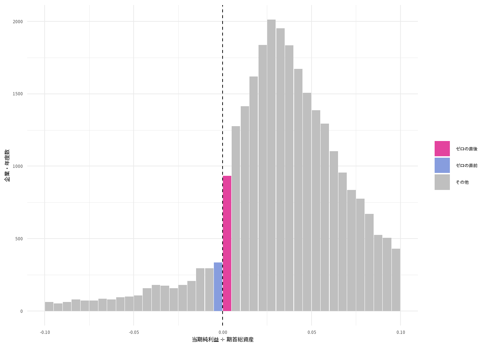
さらに、講義で作成したRコード（presemi_06.R）のように、ゼロの周辺（lim = 0.05）をより細かい階級幅（bw = 0.001＝期首総資産の0.1%刻み）で拡大して描いてみると、ゼロの前後での段差がより鮮明に見えます。
hist_bd(d$利益率, bw = 0.001, lim = 0.05, xlab = "当期純利益 ÷ 期首総資産（階級幅0.001で拡大）")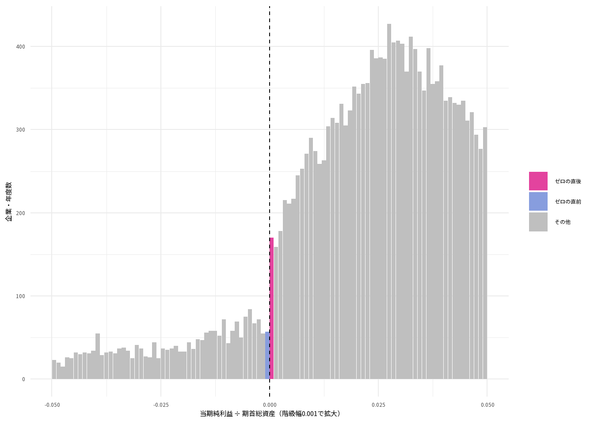
標準化差分（基準のbw = 0.005）を計算します。
res1 <- bd_test(d$利益率)
res1# A tibble: 2 × 4
階級 度数 期待度数 標準化差分
<chr> <int> <dbl> <dbl>
1 ゼロの直前 335 614 -11.2
2 ゼロの直後 933 806. 3.56- ゼロの直前（わずかな赤字）：実際の度数は335社・年であり、両隣の平均から期待される度数（614社・年）よりも大幅に少なく、標準化差分は-11.2（-1.96を大きく下回る深い「谷」）となっています。
- ゼロの直後（わずかな黒字）：実際の度数は933社・年と期待度数（805.5社・年）を上回り、標準化差分は3.6（+1.96を超える有意な「山」）となっています。
この結果は、わずかな赤字になりそうだった企業の一部が、利益調整によってわずかな黒字へと移動している（赤字回避を行っている）という仮説と整合的です。
② 減益回避（利益増減率の分布）
次に、前期からの利益の変化を期首総資産で割った利益増減率の分布と標準化差分を確認します。横軸の0は「前期とまったく同じ利益」を意味します。
hist_bd(d$利益増減率, xlab = "当期純利益の増減 ÷ 期首総資産")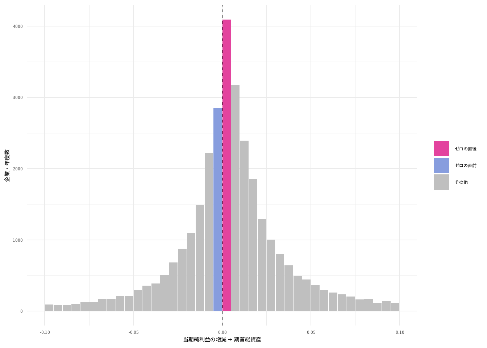
こちらも同様に、bw = 0.001, lim = 0.05でゼロの周辺を拡大してみます。
hist_bd(d$利益増減率, bw = 0.001, lim = 0.05, xlab = "当期純利益の増減 ÷ 期首総資産（階級幅0.001で拡大）")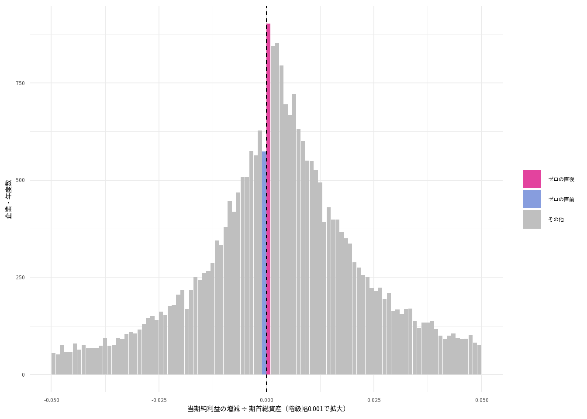
標準化差分（bw = 0.005）を確認します。
res2 <- bd_test(d$利益増減率)
res2# A tibble: 2 × 4
階級 度数 期待度数 標準化差分
<chr> <int> <dbl> <dbl>
1 ゼロの直前 2848 3155 -4.96
2 ゼロの直後 4090 3009 15.7 - ゼロの直前（わずかな減益）：標準化差分は-5と有意なマイナス（谷）。
- ゼロの直後（わずかな増益）：標準化差分は15.7と非常に大きなプラス（山）。
①の赤字回避と比べると、利益増減率はもともと分布の中心（一番高いところ）がゼロの近くにあるため、ゼロの境界線での段差が視覚的にもはっきりと表れています。
③ 予想未達回避（予想誤差率の分布）
3つ目に、決算短信の実績純利益から期初の経営者予想純利益を引いて期首総資産で割った予想誤差率の分布と標準化差分を確認します。横軸の0は「期初に経営者が公表した業績予想と実績がぴったり一致した」ことを意味します。
hist_bd(d$予想誤差率, xlab = "（実績純利益 − 予想純利益）÷ 期首総資産")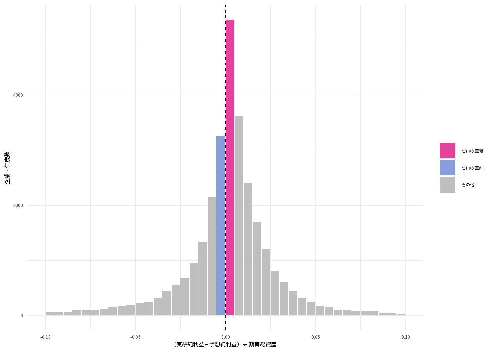
bw = 0.001, lim = 0.05でゼロの周辺を拡大した図も確認します。
hist_bd(d$予想誤差率, bw = 0.001, lim = 0.05, xlab = "（実績純利益 − 予想純利益）÷ 期首総資産（階級幅0.001で拡大）")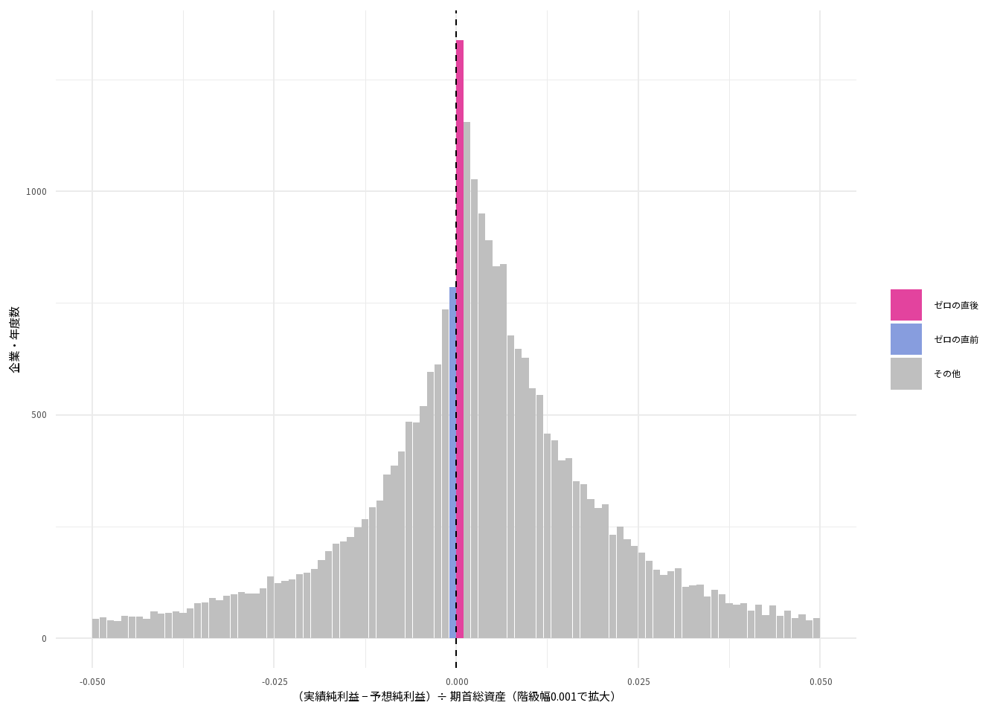
標準化差分（bw = 0.005）を計算します。
res3 <- bd_test(d$予想誤差率)
res3# A tibble: 2 × 4
階級 度数 期待度数 標準化差分
<chr> <int> <dbl> <dbl>
1 ゼロの直前 3248 3748 -7.65
2 ゼロの直後 5357 3434. 25.5 - ゼロの直前（わずかな予想未達）：標準化差分は-7.7（非常に深い谷）。
- ゼロの直後（わずかな予想達成）：標準化差分は25.5と、3つのベンチマークの中で最も高い山が現れています。
なぜ「予想未達回避」の山がいちばん高いのか？ 日本では、決算短信において経営者自身が次期の業績予想を公表する制度（経営者予想制度）があります。自分が市場に対して約束した数字を下回ると経営者の信頼や評価が大きく傷つくため、予想未達を避ける強い動機が働きます。 ただし、この山ができる理由は期末の「会計上の利益調整」だけとは限りません。そもそも期初の時点で「達成しやすいように少し控えめ（保守的）な予想を出しておく（予想管理：forecast management）」ことや、期中に予想を修正することによっても、ゼロの直後に多くの企業が集まることになります。
3つの分析結果を並べて比較する
bind_rows()関数を使って3つの結果テーブル（res1, res2, res3）を縦に結合し、標準化差分を棒グラフで並べて比較します。
res_all <- bind_rows(
"① 赤字回避" = res1,
"② 減益回避" = res2,
"③ 予想未達回避" = res3,
.id = "分析" # どの結果かを識別する列名を「分析」にする
)
res_all# A tibble: 6 × 5
分析 階級 度数 期待度数 標準化差分
<chr> <chr> <int> <dbl> <dbl>
1 ① 赤字回避 ゼロの直前 335 614 -11.2
2 ① 赤字回避 ゼロの直後 933 806. 3.56
3 ② 減益回避 ゼロの直前 2848 3155 -4.96
4 ② 減益回避 ゼロの直後 4090 3009 15.7
5 ③ 予想未達回避 ゼロの直前 3248 3748 -7.65
6 ③ 予想未達回避 ゼロの直後 5357 3434. 25.5 ggplot(res_all) +
aes(x = 分析, y = 標準化差分, fill = 階級) +
geom_col(position = position_dodge(width = 0.8), width = 0.7) +
geom_hline(yintercept = c(-1.96, 1.96), linetype = "dashed", colour = "grey40") +
geom_hline(yintercept = 0, colour = "black") +
scale_fill_manual(values = c("ゼロの直前" = "#879dde", "ゼロの直後" = "#e3439e")) +
labs(
title = "3つのベンチマークにおけるゼロ前後の標準化差分（2016〜2025年）",
x = NULL,
y = "標準化差分（点線は±1.96）",
fill = NULL
) +
theme_minimal(base_family = "noto")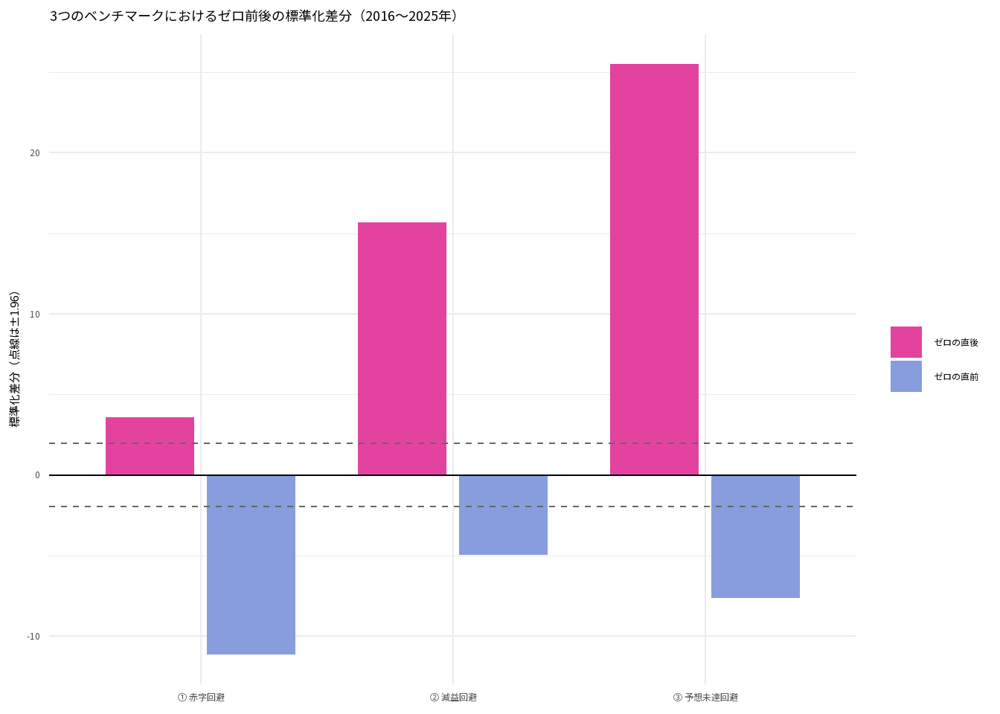
geom_col(position = position_dodge(width = 0.8))は、同じ項目（ここでは「① 赤字回避」など）の中で色分けされた棒グラフを、縦に積み上げるのではなく横に並べて表示する指定です。
3つの分析すべてにおいて、ゼロの直前（薄紫色）は点線の -1.96 を大きく下回るマイナス、ゼロの直後（ピンク色）は +1.96 を大きく上回るプラスとなっており、米国企業を対象とした Burgstahler and Dichev (1997) と同様の分布のゆがみが現代の日本企業でも観察されることがわかります。
第4部：年度別の分析とサンプルサイズの影響
授業のライブ分析では、2016年から2025年までの10個の年度に分かれて、1年分のデータだけでも同じ結果になるかを確かめました。 特定の1年度（たとえばk <- 1で2016年）に絞って分析するコードは以下の通りです。
k <- 1 # 1〜10の番号に変える
y <- 2015 + k # 2016〜2025年に対応
d_y <- d |> filter(決算年 == y)
nrow(d_y) # 検算：その年度のデータが何社あるかを確認する[1] 2886bd_test(d_y$利益率) # ① 赤字回避# A tibble: 2 × 4
階級 度数 期待度数 標準化差分
<chr> <int> <dbl> <dbl>
1 ゼロの直前 28 63.5 -4.67
2 ゼロの直後 99 88.5 0.900bd_test(d_y$利益増減率) # ② 減益回避# A tibble: 2 × 4
階級 度数 期待度数 標準化差分
<chr> <int> <dbl> <dbl>
1 ゼロの直前 271 302. -1.61
2 ゼロの直後 416 320. 4.44bd_test(d_y$予想誤差率) # ③ 予想未達回避# A tibble: 2 × 4
階級 度数 期待度数 標準化差分
<chr> <int> <dbl> <dbl>
1 ゼロの直前 377 352 1.18
2 ゼロの直後 495 360. 5.85では、2016年から2025年までの全10年度の結果をgroup_by(決算年)とgroup_modify()を使って一括で計算し、10年間の推移を折れ線グラフにして比較してみましょう。
yr <- d |>
group_by(決算年) |>
group_modify(~ bind_rows(
"① 赤字回避" = bd_test(.x$利益率),
"② 減益回避" = bd_test(.x$利益増減率),
"③ 予想未達回避" = bd_test(.x$予想誤差率),
.id = "分析"
)) |>
ungroup()
ggplot(yr) +
aes(x = 決算年, y = 標準化差分, colour = 階級) +
geom_hline(yintercept = c(-1.96, 1.96), linetype = "dashed", colour = "grey50") +
geom_hline(yintercept = 0, colour = "black") +
geom_line(linewidth = 1) +
geom_point(size = 2.5) +
facet_wrap(~分析) +
scale_colour_manual(values = c("ゼロの直前" = "#879dde", "ゼロの直後" = "#e3439e")) +
scale_x_continuous(breaks = seq(2016, 2025, 3)) +
labs(
title = "決算年別に見た標準化差分の推移（2016〜2025年）",
x = "決算年",
y = "標準化差分（点線は±1.96）",
colour = NULL
) +
theme_minimal(base_family = "noto")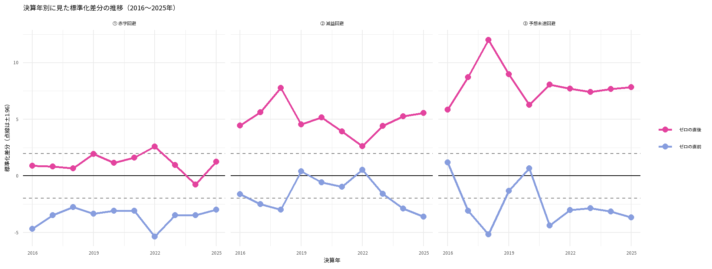
このグラフから、次の2つの重要な事実がわかります。
- 「③ 予想未達回避」の強固さ：直後の山（ピンク色の線）は、コロナ禍で多くの企業が業績悪化に見舞われた2020年・2021年を含め、10／10年度すべてで +1.96 を大きく超えて有意となっています。
- サンプルサイズによる見え方の違い：「① 赤字回避」を見ると、直前の谷（薄紫色の線）は10／10年度で -1.96 を下回って有意ですが、直後の山（ピンク色の線）が +1.96 を超えて有意になったのは 1／10年度だけです。 10年分をまとめた全体分析（約3万行）では直後の山も有意でしたが、1年分ずつ（約3,000行）に分割してサンプルサイズが10分の1になると、検定統計量である標準化差分の絶対値も小さくなり、山が検出されにくくなるのです（これも第5回で学んだ「サンプルサイズが小さいと有意になりにくい」という性質の現れです）。
第5部：階級幅（bw）を変えると結論はどう変わるか（頑健性の確認）
利益分布アプローチを使ううえで必ず知っておかなければならない「分析者の設定による結果の変動」を確認します。
これまでの分析では、ヒストグラムの階級幅を bw = 0.005（期首総資産の0.5%刻み）としてきました。しかし、この 0.005 という数字は会計基準や経済理論で決まっているわけではなく、分析者が自分で決めた数字にすぎません。 もし階級幅 bw を半分の 0.0025 や、2倍の 0.01 に変えたら、標準化差分はどう変化するでしょうか。expand_grid()とmap2()を使って一覧表にして比べてみます。
sens <- expand_grid(
bw = c(0.0025, 0.005, 0.01),
変数 = c("① 赤字回避", "② 減益回避", "③ 予想未達回避")
) |>
mutate(
res = map2(bw, 変数, \(b, v) {
x <- switch(v,
"① 赤字回避" = d$利益率,
"② 減益回避" = d$利益増減率,
"③ 予想未達回避" = d$予想誤差率
)
bd_test(x, bw = b)
})
) |>
unnest(res) |>
select(bw, 変数, 階級, 標準化差分) |>
mutate(標準化差分 = round(標準化差分, 1)) |>
pivot_wider(names_from = c(変数, 階級), values_from = 標準化差分, names_sep = "：")
knitr::kable(sens)| bw | ① 赤字回避：ゼロの直前 | ① 赤字回避：ゼロの直後 | ② 減益回避：ゼロの直前 | ② 減益回避：ゼロの直後 | ③ 予想未達回避：ゼロの直前 | ③ 予想未達回避：ゼロの直後 |
|---|---|---|---|---|---|---|
| 0.0025 | -9.1 | 3.8 | -6.6 | 8.7 | -6.4 | 14.6 |
| 0.0050 | -11.2 | 3.6 | -5.0 | 15.7 | -7.7 | 25.5 |
| 0.0100 | -20.7 | 7.1 | 1.9 | 30.8 | -3.2 | 48.0 |
表を見ると、同じデータを使っているにもかかわらず、階級幅 bw を変えるだけで標準化差分の値が劇的に変わることがわかります。
- 「③ 予想未達回避：ゼロの直後」：
bw = 0.0025では 14.6 だった標準化差分が、bw = 0.01（幅を4倍）にすると 48 へと約3倍に膨れ上がっています。 - 「② 減益回避：ゼロの直前」：
bw = 0.0025や0.005では有意なマイナス（谷）だったものが、bw = 0.01に広げると 1.9（プラス）となり、谷が完全に消えてしまいます。
なぜこのようなことが起きるのか、「② 減益回避」について bw = 0.0025 と bw = 0.01 のヒストグラムを左右に並べて目で確認してみましょう。
g_narrow <- hist_bd(d$利益増減率, bw = 0.0025, xlab = "階級幅 bw = 0.0025（狭い）") +
theme(legend.position = "none")
g_wide <- hist_bd(d$利益増減率, bw = 0.01, xlab = "階級幅 bw = 0.01（広い）") +
theme(legend.position = "none")
(g_narrow + g_wide) +
plot_annotation(title = "② 減益回避：同じデータで階級幅（bw）を変えたときの比較")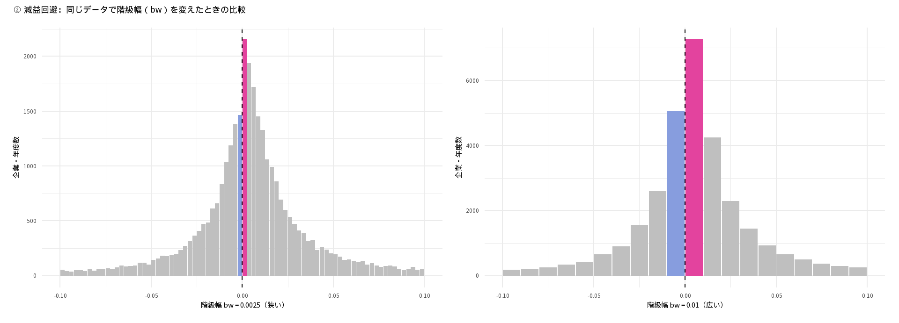
- 階級幅を
0.01（期首総資産の1%幅）に広げると、1つの階級に入る企業数が増えるため、ゼロの直後の山はより大きく判定されます。 - しかし同時に、ゼロの直前の階級（-0.01 \le x < 0）の中に、「利益調整で黒字化できるようなごくわずかな減益」だけでなく「そこそこの減益の企業」まで大量に含まれるようになるため、ゼロ直前のくぼみ（谷）が周囲の平均に埋もれて消えてしまうのです。
利益分布アプローチの限界と頑健性（Robustness）： 標準化差分は「段差がゼロではないことの統計的な確からしさ（z 値）」を測る指標であり、「全体の何%の企業が利益調整を行ったか」という調整の大きさそのものを表す数字ではありません。データ数（N）や階級幅（bw）によって値は大きく動きます。 また、先行研究（Durtschi and Easton, 2005 など）では、利益を総資産や時価総額で割る（デフレートする）ことやサンプル選択の基準だけでも分布のゆがみが生じうることが指摘されています。 だからこそ、実証研究では1つの都合の良い設定だけで結論を出さず、複数の階級幅や異なる定義でも同じ結論が維持されるか（頑健性：robustness）を必ず確認して報告する必要があります。
第6部：発展分析 ── 法人税等負担率と利益マネジメントのインセンティブ
検証する仮説（財務報告動機 vs. 税務コストのトレードオフ）
日本の会計制度では、株主向けに報告する「財務会計上の利益」と、法人税を計算するための「税務上の課税所得」が密接に結びついています（確定決算主義）。 そのため、経営者が赤字や減益、予想未達を避けようとして利益を上方に調整（利益マネジメント）すると、課税所得も増えてしまい、法人税等の支払い（税務コスト）が増加するというトレードオフが生じます。
ここから、次のような仮説を立てることができます。
【仮説】： 繰越欠損金や税額控除などによって法人税等負担率が低い企業は、利益を増やしても追加の税負担が生じにくいため、財務報告動機（目標利益の達成）を優先して利益マネジメントを行うインセンティブが強く、目標利益（0）付近での分布の歪みが大きくなる。 反対に、法人税等負担率が高い企業は、利益を増やすことに伴う税務コストが大きいため、利益マネジメントが抑制され、目標利益付近での分布の歪みは小さくなる。
この仮説を検証するため、サンプルを法人税等負担率の中央値（median）を基準として「低負担率群（中央値以下）」と「高負担率群（中央値超）」の2グループに分割し、それぞれのグループで分布の歪み（標準化差分）を比較してみましょう。
データの分割と記述統計の確認
まず、法人税等負担率の中央値と欠損値（NA）の状況を確認し、2つのグループに分割します。
# 法人税等負担率の中央値を確認（欠損値を除く）
tax_med <- median(d$法人税等負担率, na.rm = TRUE)
tax_med[1] 31.8# 法人税等負担率が欠損していない行を取り出し、中央値で2群に分割する
d_tax <- d |>
filter(!is.na(法人税等負担率)) |>
mutate(
税負担区分 = if_else(
法人税等負担率 <= tax_med,
"低負担率群（中央値以下）",
"高負担率群（中央値超）"
) |>
factor(levels = c("低負担率群（中央値以下）", "高負担率群（中央値超）"))
)
# グループごとの行数と特徴を確認
d_tax |>
group_by(税負担区分) |>
summarise(
行数 = n(),
負担率の中央値 = median(法人税等負担率),
赤字の割合 = mean(利益率 < 0, na.rm = TRUE),
減益の割合 = mean(利益増減率 < 0, na.rm = TRUE),
予想未達の割合 = mean(予想誤差率 < 0, na.rm = TRUE)
)# A tibble: 2 × 6
税負担区分 行数 負担率の中央値 赤字の割合 減益の割合 予想未達の割合
<fct> <int> <dbl> <dbl> <dbl> <dbl>
1 低負担率群（中央値以下）…… 12736 25.2 0.0433 0.292 0.262
2 高負担率群（中央値超）…… 12732 37 0.0429 0.460 0.501法人税等負担率の全体の中央値は31.8%であり、これによって「低負担率群（31.8%以下）」と「高負担率群（31.8%超）」のほぼ同数の2グループに分割されました。
2グループの標準化差分とヒストグラムの比較
それでは、低負担率群と高負担率群のそれぞれについて、3つのベンチマーク（①赤字回避・②減益回避・③予想未達回避）の標準化差分を計算して比較します。
tax_res <- d_tax |>
group_by(税負担区分) |>
group_modify(~ bind_rows(
"① 赤字回避" = bd_test(.x$利益率),
"② 減益回避" = bd_test(.x$利益増減率),
"③ 予想未達回避" = bd_test(.x$予想誤差率),
.id = "分析"
)) |>
ungroup()
tax_res |>
select(税負担区分, 分析, 階級, 度数, 期待度数, 標準化差分) |>
mutate(標準化差分 = round(標準化差分, 2)) |>
knitr::kable()| 税負担区分 | 分析 | 階級 | 度数 | 期待度数 | 標準化差分 |
|---|---|---|---|---|---|
| 低負担率群（中央値以下） | ① 赤字回避 | ゼロの直前 | 18 | 81.0 | -8.28 |
| 低負担率群（中央値以下） | ① 赤字回避 | ゼロの直後 | 131 | 160.0 | -2.02 |
| 低負担率群（中央値以下） | ② 減益回避 | ゼロの直前 | 970 | 1085.0 | -3.15 |
| 低負担率群（中央値以下） | ② 減益回避 | ゼロの直後 | 1463 | 1110.0 | 8.50 |
| 低負担率群（中央値以下） | ③ 予想未達回避 | ゼロの直前 | 1069 | 1278.5 | -5.48 |
| 低負担率群（中央値以下） | ③ 予想未達回避 | ゼロの直後 | 1942 | 1335.0 | 13.21 |
| 高負担率群（中央値超） | ① 赤字回避 | ゼロの直前 | 232 | 446.0 | -10.28 |
| 高負担率群（中央値超） | ① 赤字回避 | ゼロの直後 | 763 | 565.5 | 6.35 |
| 高負担率群（中央値超） | ② 減益回避 | ゼロの直前 | 1374 | 1449.0 | -1.78 |
| 高負担率群（中央値超） | ② 減益回避 | ゼロの直後 | 1770 | 1321.5 | 9.95 |
| 高負担率群（中央値超） | ③ 予想未達回避 | ゼロの直前 | 1630 | 1751.0 | -2.70 |
| 高負担率群（中央値超） | ③ 予想未達回避 | ゼロの直後 | 2302 | 1466.5 | 17.08 |
結果を視覚的に比較するために、標準化差分をグループ別に棒グラフで並べて描きます。
ggplot(tax_res) +
aes(x = 税負担区分, y = 標準化差分, fill = 階級) +
geom_col(position = position_dodge(width = 0.75), width = 0.65) +
geom_hline(yintercept = c(-1.96, 1.96), linetype = "dashed", colour = "grey40") +
geom_hline(yintercept = 0, colour = "black") +
facet_wrap(~分析) +
scale_fill_manual(values = c("ゼロの直前" = "#879dde", "ゼロの直後" = "#e3439e")) +
labs(
title = "法人税等負担率の高低別に見たゼロ前後の標準化差分",
x = NULL,
y = "標準化差分（点線は±1.96）",
fill = NULL
) +
theme_minimal(base_family = "noto")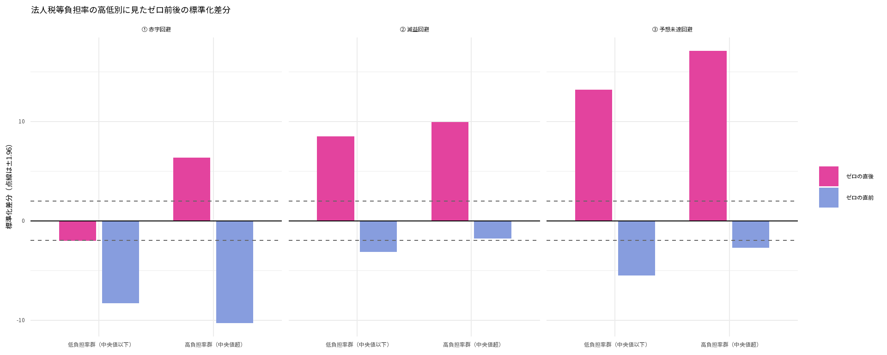
さらに、減益回避（利益増減率）と予想未達回避（予想誤差率）のヒストグラムを、低負担率群と高負担率群で並べて比較してみます。
d_low <- d_tax |> filter(税負担区分 == "低負担率群（中央値以下）")
d_high <- d_tax |> filter(税負担区分 == "高負担率群（中央値超）")
p_earn_low <- hist_bd(d_low$利益増減率, xlab = "利益増減率（低負担率群）") + theme(legend.position = "none")
p_earn_high <- hist_bd(d_high$利益増減率, xlab = "利益増減率（高負担率群）") + theme(legend.position = "none")
p_fcst_low <- hist_bd(d_low$予想誤差率, xlab = "予想誤差率（低負担率群）") + theme(legend.position = "none")
p_fcst_high <- hist_bd(d_high$予想誤差率, xlab = "予想誤差率（高負担率群）") + theme(legend.position = "none")
(p_earn_low + p_earn_high) / (p_fcst_low + p_fcst_high) +
plot_annotation(title = "低負担率群（左）と高負担率群（右）のヒストグラム比較")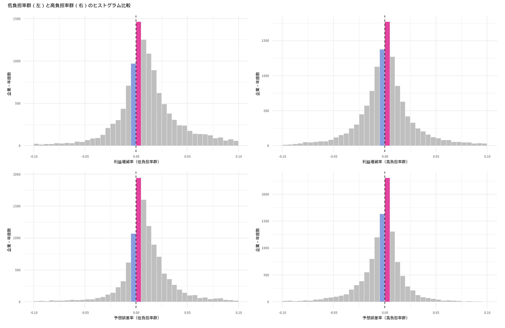
結果の読み解き：仮説と一致する点と、会計データ特有の「罠」
上の表とグラフを詳しく見ると、「仮説通りに支持された部分」と「仮説とは一見逆に見える部分」の両方が現れています。ここを正確に読み解くことが実証会計研究の醍醐味です。
1. 仮説と整合的な結果：「② 減益回避」と「③ 予想未達回避」におけるゼロ直前の「谷」
まず、「② 減益回避」と「③ 予想未達回避」のゼロの直前（わずかな減益・わずかな予想未達のくぼみ）に注目してください。
- ② 減益回避（ゼロの直前）：
- 低負担率群：標準化差分は -3.15（5%水準で有意な深い「谷」）
- 高負担率群：標準化差分は -1.78（-1.96 に届かず、統計的に有意な谷が消失）
- ③ 予想未達回避（ゼロの直前）：
- 低負担率群：標準化差分は -5.48（非常に深い「谷」）
- 高負担率群：標準化差分は -2.7（谷の深さが約半分に縮小）
このように、「わずかな減益や予想未達の領域から企業がどれだけ抜け出しているか（ゼロ直前の谷の深さ）」を見ると、法人税等負担率が低い企業群のほうが明確に歪み（谷）が大きく、負担率が高い企業群では歪みが小さいという、仮説通りの結果が確認できます。
2. なぜ「① 赤字回避」や「ゼロの直後の山」では高負担率群のほうが大きく見えるのか？
一方で、「① 赤字回避」や各ベンチマークの「ゼロの直後（山）」を見ると、逆に高負担率群のほうが標準化差分が大きくなっています（とくに「① 赤字回避」のゼロの直後は、低負担率群で131社しかいないのに対し、高負担率群には763社と約6倍も集中しています）。 なぜこのような逆転が起きるのでしょうか？ ここには、会計データの定義に由来する2つの構造的なバイアス（内生性）が隠れています。
# 赤字企業と黒字企業で、法人税等負担率が欠損（NA）になっている割合を調べる
d |>
mutate(黒字赤字 = if_else(利益率 < 0, "赤字企業（利益率 < 0）", "黒字企業（利益率 >= 0）")) |>
group_by(黒字赤字) |>
summarise(
全体の件数 = n(),
負担率ありの件数 = sum(!is.na(法人税等負担率)),
負担率がNAの割合 = mean(is.na(法人税等負担率))
)# A tibble: 3 × 4
黒字赤字 全体の件数 負担率ありの件数 負担率がNAの割合
<chr> <int> <int> <dbl>
1 赤字企業（利益率 < 0） 4466 1097 0.754
2 黒字企業（利益率 >= 0） 29073 24371 0.162
3 <NA> 11 0 1 赤字企業における
法人税等負担率の欠損（選択バイアス）： 上の集計表が示す通り、黒字企業では法人税等負担率がほぼ全社で存在するのに対し、赤字企業（利益率 < 0）では約75.5%もの観測値で法人税等負担率が欠損値（NA）になっています（日経NEEDSでは、税引前利益や当期純利益が赤字の場合、原則として税負担率が計算不能としてNAになるためです）。 そのため、!is.na(法人税等負担率)で絞り込んだ時点で、0より左側（赤字側）の企業の4分の3以上がサンプルから脱落してしまい、「① 赤字回避」におけるゼロ前後の段差は正しく計測できなくなっています。「ごくわずかな黒字（分母が極小）」による法人税等負担率の機械的な跳ね上がり（逆の因果）：
法人税等負担率は次式で計算されます。 \text{法人税等負担率} = \frac{\text{法人税・住民税及び事業税} \pm \text{法人税等調整額}}{\text{税金等調整前当期純利益}} \times 100 ここで、利益がゼロの直後（ごくわずかな黒字）にある企業を考えてみてください。分母である「税金等調整前当期純利益」がゼロに極めて近い小さな正の値になる一方で、分子の税金費用には、利益と無関係に課される住民税均等割や、交際費等の損金不算入（永久差異）、繰延税金資産の取り崩しなどが一定額発生します。 その結果、「利益がゼロすれすれの微小黒字である」こと自体が原因となって、計算上の法人税等負担率が50%〜100%超へと機械的に跳ね上がり、自動的に「高負担率群」に分類されてしまうのです。
第5回・第6回を通じた最大の教訓： 第5回の「期末の時価総額MVで割ったBM」と同様に、当期の利益が分母に入っている「当期の法人税等負担率」でサンプルを分割すると、被説明変数（当期の利益がゼロ近辺かどうか）が分類変数（税負担率の高低）を機械的に決めてしまう「逆の因果（内生性）」が生じます。 これを避けるには、①ゼロ近辺で分母が極小になる「赤字回避」ではなく「減益回避・予想未達回避」の直前の谷に注目するか、②前期の税負担率や繰越欠損金ダミーなど「期首時点で決まっている変数」を使ってグループ分けを行うのが、実証会計研究における正しい処方箋となります。
まとめ：第6回のポイントと関数の整理
| 分析ステップ | 使う関数・書き方 | 検算・解釈の重要ポイント |
|---|---|---|
| コード類の読み込み | read_csv(..., col_types = cols(コード列 = col_character())) |
先頭の 0 が消えないように文字列型で読み込んだか？ |
| 前期の値の取得 | arrange() \rightarrow group_by() \rightarrow if_else(連続, lag(x), NA_real_) |
データが飛んでいる年や決算月変更の年を誤って「前期」としていないか？ |
| 規模の調整（比率化） | 利益 / 期首資産 |
当期の利益が含まれる「期末資産」ではなく「期首資産」で割っているか？ |
| 階級（ビン）の作成 | floor(x / bw) |
階級の境界線がちょうどベンチマーク（0）になるように区切られているか？ |
| 標準化差分による検定 | bd_test(x, bw)（絶対値 > 1.96 で5%水準有意） |
1年分などサンプルサイズが小さいときは値が小さくなることに注意したか？ |
| 頑健性の確認 | bw = 0.0025, 0.005, 0.01（や 0.001）で比較 |
分析者が決めた階級幅を変えても「谷」や「山」が消えないか？ |
| サブサンプル比較 | median(x, na.rm = TRUE) で分割し group_modify() |
分割に使う変数（税負担率など）に欠損バイアスや分母効果（逆の因果）がないか？ |